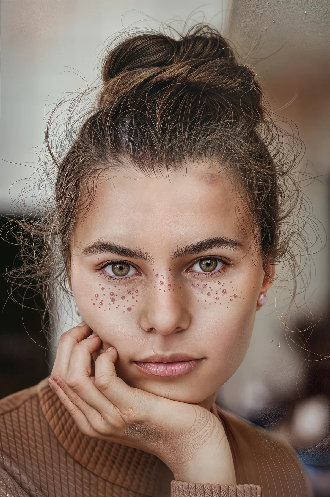

How to Upscale Blurry Photos to 4K, 8K and 16K Without Stretching Pixels

Enlarging a small photograph in a standard image editor only multiplies the grid: a 1,000-pixel portrait stretched to 4,000 pixels gives you four times as many squares, but every eyelash, fabric weave and letter edge turns into a soft blur. Neural image super resolution works differently. Instead of interpolating between adjacent pixels, the model recognizes edges, textures and color gradients, suppresses JPEG mosquito noise, and draws new high-frequency detail as it scales the canvas up.
Picking the right scale factor: 2x, 4x, 8x or 16x
More resolution is not automatically better if your display or printer will just downsample the file back down. Matching the scale multiplier to the final output saves bandwidth and keeps file sizes manageable:
- 2x (Web and 1080p displays). Ideal for turning a 900-pixel blog image, product thumbnail or old phone shot into a crisp retina-ready asset.
- 4x (4K screens and social media). A 1,000 × 1,000 pixel square becomes 4,000 × 4,000—clearing the 3,840-pixel threshold for true 4K monitors and high-resolution hero banners.
- 8x (300 DPI standard print). Print shops ask for roughly 300 dots per inch. An 8 × 10 inch frame needs around 2,400 × 3,000 pixels, and an A2 poster requires roughly 5,000 × 7,000 pixels.
- 16x (Large-format signage and 16K). Takes a 1,000 × 1,000 source all the way to 16,000 × 16,000 pixels for trade-show backdrops, gallery walls or deep crop zooms.
Source quality rules that govern the output
When you run a batch through the Monipix AI image upscaler, the engine accepts JPG, PNG, WebP and HEIC files up to 50 MB each and processes up to 10 images at once. To get the cleanest reconstruction, check your source file against three practical boundaries before you upload:
- Start above 500 pixels on the long edge when aiming for 4K. Sources around 1,000 pixels paired with a 4x pass produce noticeably cleaner skin, foliage and typography than tiny 150-pixel avatars pushed to 16x.
- Use the earliest copy you have. Every time a photo passes through a messaging app or social feed, another round of lossy compression strips away subtle texture that the neural network could have used as a cue.
- Respect the geometry boundary. Super resolution restores faded color, reduces noise and sharpens edges, but it never alters the aspect ratio of the photo and cannot invent recognizable faces that were completely missing from a tiny, heavily damaged crop.
One credit across every resolution tier
Unlike cloud tools that charge three or four times more for 8K and 16K exports, Monipix prices image upscaling at a flat 1 credit per image regardless of whether you select 2x, 4x, 8x or 16x. Every free account receives 10 credits every 30 days—with no credit card required and no watermark on exports—which covers upscaling all the way up to 16K both in the browser and inside the Monipix Canva app.
If your starting point is a compressed screenshot, a small e-commerce vendor photo or an old digital camera file that simply needs a fast jump to crisp high definition, the dedicated HD image converter uses the same neural upscaling pipeline tailored for turning low-quality pictures into 2K, 4K, 8K or 16K outputs in seconds.
Resolution and print quick reference
| Target output | Recommended scale (from ~1000 px) | Typical pixel dimensions | Credits per image |
|---|---|---|---|
| Website hero / 2K display | 2x | ~2000 × 2000 px | 1 credit |
| 4K UHD monitor / social campaign | 4x | ~4000 × 4000 px | 1 credit |
| 8×10 in or A2 print at 300 DPI | 4x – 8x | 2400×3000 to 5000×7000 px | 1 credit |
| Large-format 16K exhibition print | 16x | 16000 × 16000 px | 1 credit |